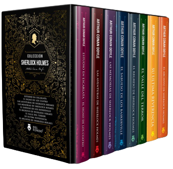
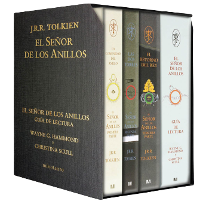
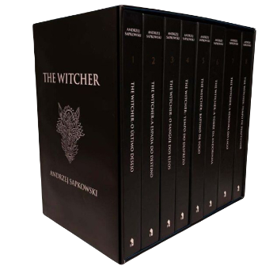
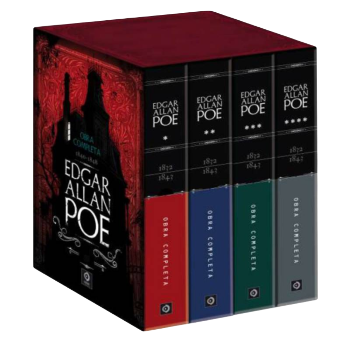
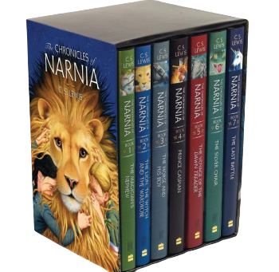
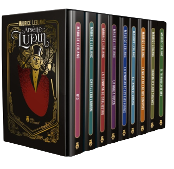
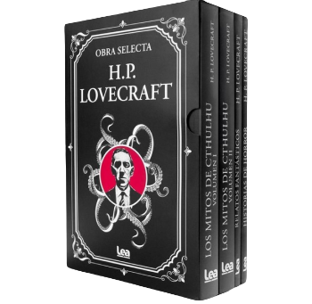

 Sherlock Holmes Sherlock Holmes & John Watson. El primero es vanidoso como un niño y de una monstruosa especialización, si no tiene un caso interesante muere de aburrimiento. El segundo, al contrario, busca para sí una porcion de felicidad. En algún lugar remoto son como El Quijote y Sancho Panza. Disfrute de las 4 novelas y los 56 relatos cortos que dieron vida a esta dupla tan particular.  El señor de los anillos En la adormecida e idílica Comarca, un joven hobbit recibe un encargo: custodiar el Anillo Único y emprender el viaje para su destrucción en las Grietas del Destino. Consciente de la importancia de su misión, Frodo abandona la Comarca e inicia el camino hacia Mordor con la compañía de elenco de personajes que brindan la profundidad necesaria a la historia para que se convierta en una historia épica.  The Witcher La trama tiene como personaje central al brujo Geralt de Rivia, quien ha cosechado fama como un gran cazador de monstruos y criaturas. Normalmente, se deja llevar por una buena bolsa de dinero, pero tendrá encuentros que le cambiarán el panorama. Allá afuera hay grandes peligros y amenazas, pero las posibilidades de sortearlos con éxito son mayores si cuentas con los escuderos o aliados correctos.  Edgard Allan Poe Edgar Allan Poe llevó a cabo lo que ningún otro escritor había logrado antes: liberar las terribles imágenes que atesora el inconsciente para dejarlas caminar entre sus páginas. Abanderado de la novela gótica y precursor del relato detectivesco y de la ciencia ficción, sus historias llevan el suspenso y el desasosiego hasta una perfección nunca alcanzada y quizá jamás alcanzable de nuevo.
 Las Crónicas de Narnia La serie se desarrolla en el reino ficticio de Narnia, un mundo fantástico de magia, bestias míticas y animales que hablan. Narra las aventuras de varios niños que juegan un papel protagónico en la historia del mundo narniano. En la mayoria de las historias los protagonistas son todos niños del mundo real transportados mágicamente a Narnia, donde el león Aslan los llama para proteger a Narnia del mal.  Arsene Lupin El ladrón y caballero Arsène Lupin, es todo lo que esperarías de un aristócrata francés: ingenioso, encantador, brillante, astuto … y posiblemente el ladrón más grande del mundo. Los pobres y los inocentes no tienen nada de qué preocuparse y frecuentemente se benefician de su generosidad espontánea. Los ricos y poderosos, y el detective que intenta arruinar su diversión, sin embargo, deben tener cuidado: son el objetivo de las travesuras y farsas de Lupin. Autores Independientes En esta colección se aglutinan lo libros escritos por aquellos sujetos que se sitúan en los márgenes de la industria editorial, muchas veces obligados a fundar una mini-empresa para administrar el negocio, no por voluntad propia, sino por pura necesidad. Para ayudarlos en su difusión y venta de ejemplares se ofrece este servicio excepcional. Aventurese a encontrar ese libro que tanto soñó y que no sabía que existía.  H.P. Lovecraft Maestro indiscutible de la literatura fantástica, su obra rebasa en realidad la confluencia de géneros como la literatura de terror y la ciencia ficción hasta cristalizar en una narrativa única que recrea una mitología terrorífica de seres de un inframundo paralelo. Una puerta de entrada para el descubrimiento de un género que fascina a miles de lectores en el mundo.